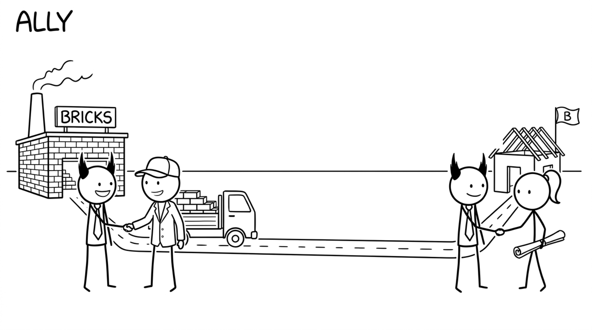

<section id="cap-ally" data-transition="fade" style="display:flex; align-items:center; justify-content:center; padding:0; background:#fcfcfa">

<p style="position:absolute;left:0;bottom:10px;width:1920px;margin:0;text-align:center;font-family:'Patrick Hand', 'Trebuchet MS', sans-serif;font-size:22px;color:#8a8f98">Copyright Dobromir Montauk 2026</p>
<aside><b>Ally.</b> Other functions' capacity can become yours. Engineering can't win alone, and the partners who trust you will spend their capacity on your goals.<br>- Product: a partner, not a requester. You plan the roadmap together, they cut scope with you instead of around you, and they bring you to the customer.<br>- Sales: they tell you which deals need what, months before the contract is signed, and they don't sell the feature you haven't built. In return, you give them dates you actually hit.<br>- Also: the platform team that adds the API you need if they hear about it a quarter ahead, and the recruiter who moves faster on your hires.<br>Alliances are built before you need them, not during the crisis.</aside>
</section>
